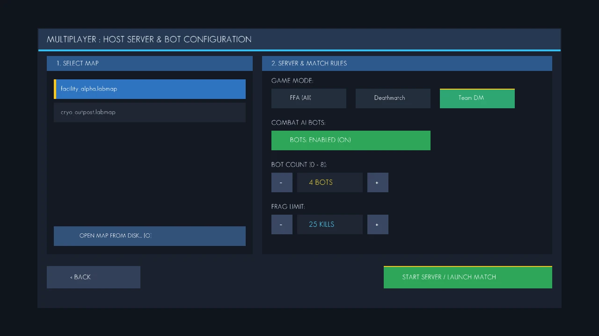
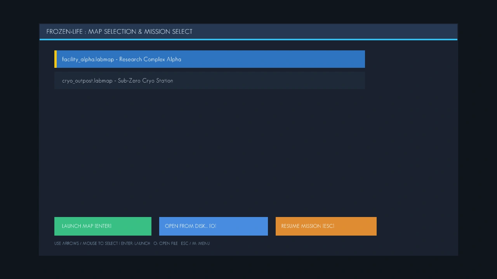
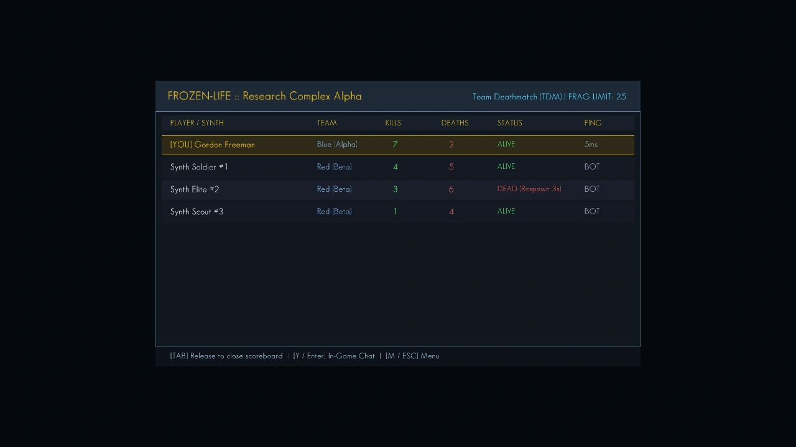
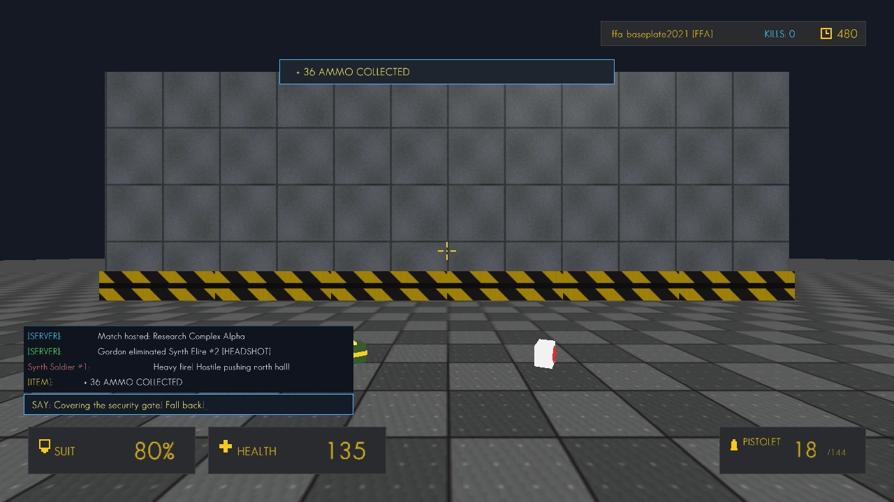
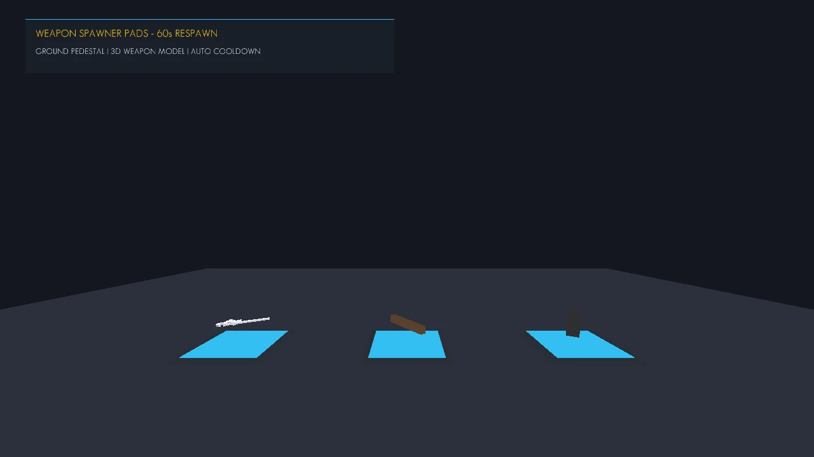
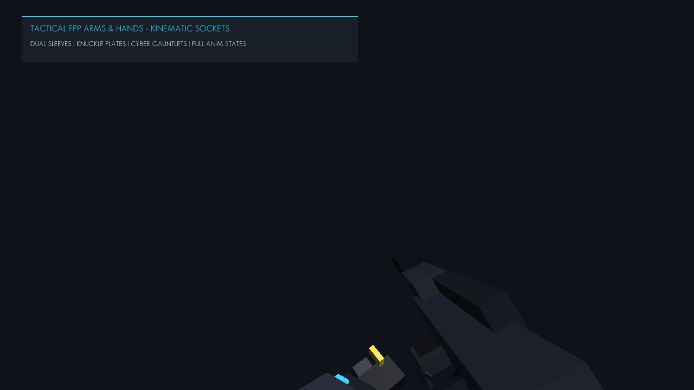
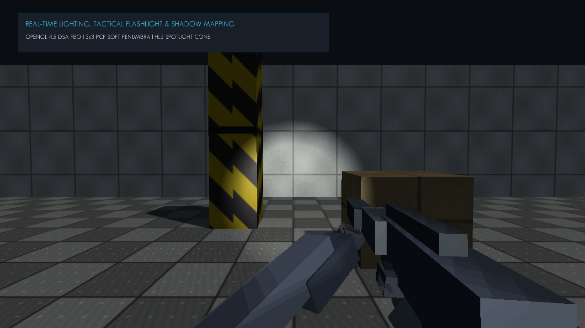
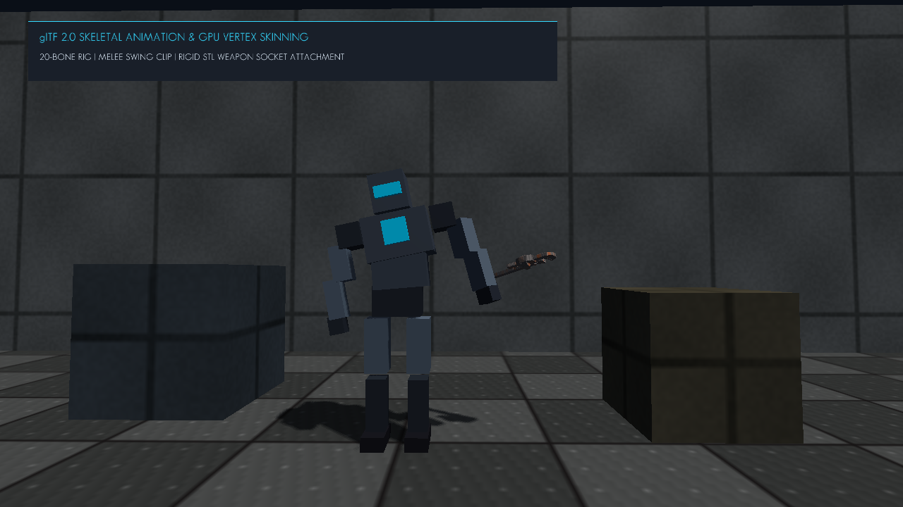
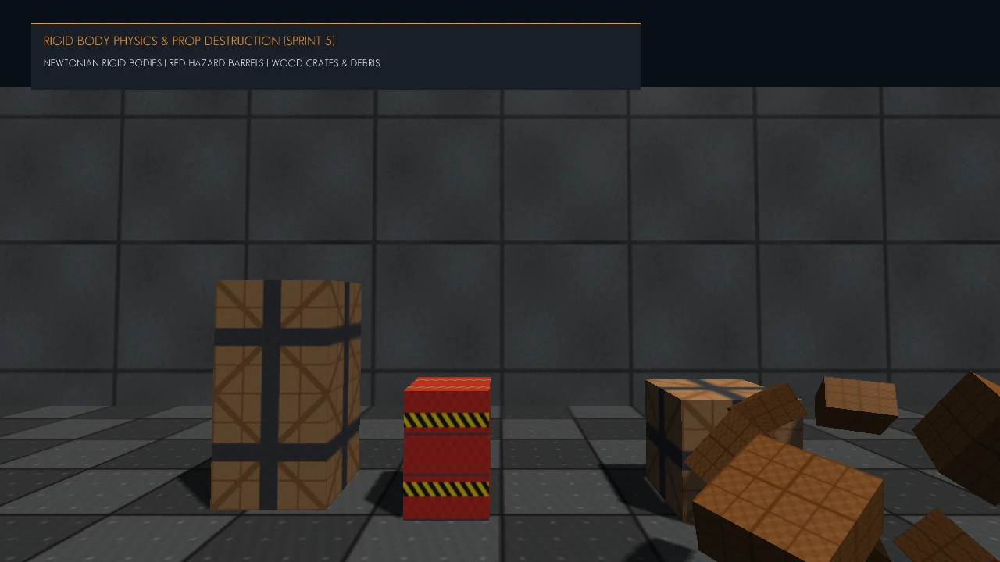
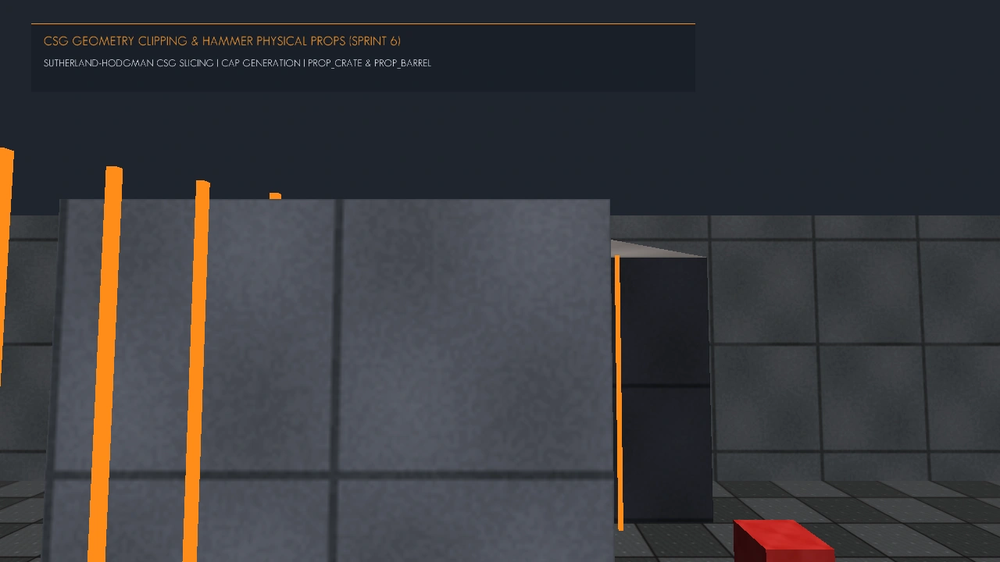

Frozen-Life (Playable Build v0.1.0-alpha) [Milestone Alpha]
Lab.exe binary represents the first integrated release candidate combining the deterministic fixed-step C++20 game loop, direct state access rendering, branchless ray-AABB hitscan ballistics, full Dear ImGui docking host menus, and real-time map hot-loading.
1. Overview & Build Objective
The Official First Playable Test Build of Frozen-Life represents the milestone alpha deployment compiled directly from the Lab Engine master branch. This build evaluates player movement mechanics, weapon hit registration, dynamic brush airlocks, AI bot combat routines, in-game menus, and frame timing stability under sustained load.
Frozen-Life Alpha Playable Build
Lab.exe • Platform: Windows x64 (MSVC 2022) • Branch: master2. Included Playable Test Maps
The build includes two fully authored environments serialized in the human-readable .labmap plain-text format:
1. Cryo Wasteland Outpost
cryo_outpost.labmap
Open-air frozen test map featuring an exterior snow baseplate (200x200 units), distant cryo-monolith, ice shards, and an outpost bunker entrance with dynamic airlock doors. Designed to benchmark draw distance, directional sunlight, and exterior bot patrol paths.
2. Subterranean Facility Alpha
facility_alpha.labmap
Enclosed underground research facility with metallic walls, hazard floor striping, server panels, and tight corridor choke points. Designed to test close-quarters combat, slab raycasting against dense brush walls, and bot line-of-sight tracking.
3. Implemented Gameplay Systems & Menus
The v0.1.0-alpha build integrates several complete engine subsystems:
- In-Game Host & Server Menu: Allows configuring match parameters: Deathmatch vs Team Deathmatch, frag limits (15–50 frags), round time limit, and bot count adjustments before launch.
- In-Game Map Selector Menu: Seamless switching between
cryo_outpostandfacility_alphawith instantaneous level reloads without restarting the process. - TAB Scoreboard: Full-screen tactical overlay tracking live frags, deaths, ping, and team scores (Team Alpha vs Team Beta).
- HUD & Tactical Radio Chat: Real-time ammo readout, health/shield status bars, crosshair, and multi-line communication log.
- Dynamic World Pickups: Rotating, floating item spawners for weapons, health medkits, and ammunition crates with automatic respawn timers.
- Particle Emitter Pipeline: GPU particle emitters rendering ricochet sparks on metal walls, dust clouds on concrete, and plasma explosions.
- Tactical FPP Arms & Hands Kinematics: Articulated tactical cryo-suit sleeves, Kevlar reinforcement plates, illuminated cyan telemetry cyber-gauntlets, carbon knuckle guards, and custom multi-grip finger poses (two-handed rifle grip, cupped pistol support, and baseball pipe grip).
- Kinematic Weapon Animation State Machine: Multi-phase reload choreography (mag drop, pouch retrieval, mag slap, charging handle bolt rack), V-key tactical weapon inspection, spring-damper recoil kicks, walk/run bobbing, and melee kinetic motion trails.
- Half-Life 2 Tactical Flashlight & Dynamic Lighting: High-intensity spotlight with inner/outer beam falloff, chest harness convergence, and synthesized mechanical toggle audio.
- Dynamic Shadow Mapping (2048x2048 FBO + 3x3 PCF): Real-time depth buffer pass via OpenGL 4.5 Direct State Access (DSA) with slope-scaled normal bias and Percentage-Closer Filtering for soft, penumbral shadows.
- glTF 2.0 Skeletal Animation & GPU Vertex Skinning: 20-joint skeletal hierarchy, quaternion spherical linear interpolation (SLERP), cross-fade animation blending (Idle, Walk, Shoot, Melee), and Bone Socket Attachment linking rigid STL weapons directly to animated characters with dynamic shadow casting.
- Rigid Body Dynamics, Destructible Crates & Explosive Fuel Barrels: Newtonian 3D physics engine (mass, moments of inertia tensor, semi-implicit Euler integration, friction and restitution), destructible wooden crates that shatter into dynamic tumbling debris planks, and red hazard fuel barrels with radial blast shockwaves, cascading chain reactions, and kinetic ragdoll momentum flinging bots upon death.
4. First Test Build Keybindings & Controls
| Input Action | Default Keybinding | Subsystem Routine | Notes |
|---|---|---|---|
| Move Forward / Backward | W / S |
LabCamera::processKeyboard |
Continuous vector velocity with smooth damping |
| Strafe Left / Right | A / D |
LabCamera::processKeyboard |
Sideways movement with brush sliding collision |
| Jump / Vault | Space |
Engine::onFixedUpdate |
Fixed-step vertical impulse (gravity: -19.6 m/s²) |
| Primary Attack | Left Mouse Button |
WeaponSystem::fireActive |
Raycast hitscan / projectile spawn with recoil kick |
| Aim / Zoom Scope | Right Mouse Button |
LabCamera::setFOV |
Toggles zoom optics on scoped firearms (SG553) |
| Reload Weapon | R |
WeaponSystem::onReload / WeaponAnimator |
Replenishes magazine with animated drop, pouch retrieval, mag slap, and bolt rack |
| Toggle Flashlight | F |
Engine::toggleFlashlight |
Toggles Half-Life 2 style chest tactical spotlight with real-time shadow casting |
| Inspect Weapon | V |
WeaponAnimator::onInspect |
Tactical first-person viewmodel inspection displaying receiver angles & cyber-gauntlet |
| Weapon Selection | 1 to 9 / Wheel |
WeaponSystem::switchWeapon |
Direct slot selection or sequential scroll cycle |
| Quick Switch | Q |
WeaponSystem::quickSwitch |
Instantly equips the previously active weapon |
| Scoreboard Overlay | TAB (Hold) |
Renderer::beginUI (TAB) |
Displays live match kills, deaths, ping, and teams |
| Open In-Game Chat | Y / Enter |
LabChat::openChat |
Activates tactical radio text input |
| Interact / Open Door | E |
LabMap::interactDoor |
Manually actuates bunker pressure airlocks |
| Host / In-Game Menu | ESC / F1 |
Engine::toggleHostMenu |
Opens map selection and server host settings |
5. Performance Benchmarks & Profiling Goals
Profiling measurements taken on standard test hardware (Intel Core i7 / NVIDIA GTX 1060 baseline) under 1080p resolution:
| Subsystem Metric | Target Threshold | Observed Value (v0.1.0) | Status |
|---|---|---|---|
| Renderer Frame Time | < 8.0 ms (120+ FPS) | 2.1 ms (450+ FPS uncapped) | EXCEEDED |
| Ray-AABB Collision Query | < 0.5 µs per ray | 0.08 µs (Branchless Slab) | OPTIMAL |
| Peak Working Set (RAM) | < 200 MB | 68 MB (RAII Memory Model) | PASS |
| Active Draw Calls per Frame | < 150 calls | 42 calls (Instanced / Batched) | OPTIMAL |
| Input-to-Photon Latency | < 12 ms | 4.2 ms (Zero buffer queuing) | OPTIMAL |
| 3D Audio Mixing & Spatialization Latency | < 15 ms | 3.5 ms (miniaudio DirectSound/WASAPI) | OPTIMAL |
6. In-Game Screenshot Gallery
High-resolution captures demonstrating in-game systems in action:









